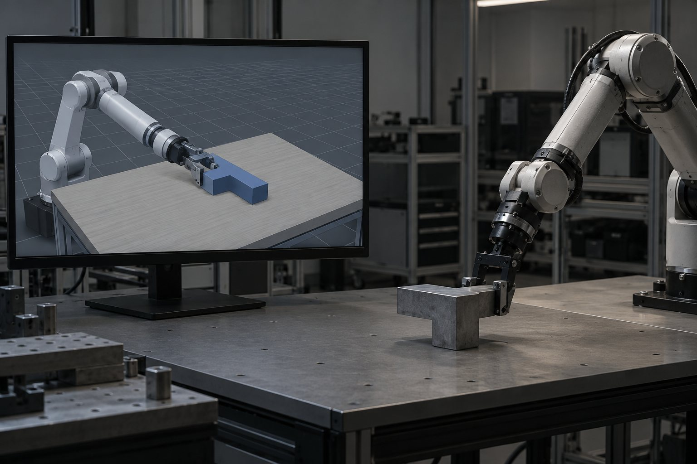

E1 · Evaluate 10 episodes
15 minInstall lerobot[pusht] and run the lerobot-eval from the box (cpu or cuda).
Done when: the terminal shows pc_success and n_episodes: 10, and outputs/eval/act_200/eval_info.json exists.
Lesson 6 · 16 min
Testing on the real robot costs time, parts, and patience. The simulator lets you fail a thousand times for free and gives you one number: the success rate. But the number only counts if the test is hard enough and if the simulated world looks like the real one.
Start the lesson
Goal: evaluate a policy in simulation and know why LIBERO alone is no longer enough.
Click each step.
Simulation to fail cheaply; benchmark to compare; real world to decide.
Click each one.
In 2026 several models score above 97% on LIBERO: OpenVLA-OFT 97.1%, X-VLA 98.1%, MolmoAct 2-Think 98.1%. When everyone gets a top score, the test doesn't separate anyone.
That's why harder tests (LIBERO-plus, RoboTwin 2.0) and real-world evaluation (RoboArena, MolmoBot) are showing up.
Instead of a perfect simulator, you deliberately vary color, lighting, friction, mass, and camera position in every episode.
A policy that learns with that much variation treats the real world as just one more variation.
You measure the real robot (mass, friction, motor delay) and tune the simulator to match.
MuJoCo 3.5.0 (Feb/2026) brought a Python toolbox for this, plus actuator and sensor delays.
Use both together: measure what you can measure and randomize the rest.
Install the simulated environment and run the policy you trained in lesson 5.
pip install "lerobot[pusht]==0.6.1"
lerobot-eval \ --policy.path=outputs/train/act_pusht_teste/checkpoints/last/pretrained_model \ --env.type=pusht \ --eval.n_episodes=10 \ --eval.batch_size=10 \ --eval.use_async_envs=false \ --policy.device=cuda \ --output_dir=outputs/eval/act_200
python -c "import json; d = json.load(open('outputs/eval/act_200/eval_info.json')); print(d['overall'])"
ls outputs/eval/act_200/videos/pusht_0/INFO ... Overall Aggregated Metrics:
INFO ... {'avg_sum_reward': 11.107..., 'avg_max_reward': 0.0824..., 'pc_success': 0.0, 'n_episodes': 10, 'eval_s': 9.46...}
INFO ... End of eval
# same evaluation with the 5000-step checkpoint (E3 from lesson 5), 20 episodes:
{'avg_sum_reward': 19.45..., 'avg_max_reward': 0.275..., 'pc_success': 0.0, 'n_episodes': 20, 'eval_s': 14.0...}LeRobot 0.6.1. With 200 steps: 13 s total, on both GPU and CPU only (the evaluation is light). pc_success is the success rate in %; avg_max_reward shows how close the policy got to the target (higher is better). Both short trainings give 0% success: the policy still doesn't push the T to the target, but with 5000 steps it gets closer (0.08 → 0.28).
--eval.use_async_envs=false option fixed it.lerobot/diffusion_pusht needs a format migration in 0.6 and doesn't run directly. Evaluate your own.SDL_VIDEODRIVER=dummy before the command.Use the checkpoint from lesson 5.
Install lerobot[pusht] and run the lerobot-eval from the box (cpu or cuda).
Done when: the terminal shows pc_success and n_episodes: 10, and outputs/eval/act_200/eval_info.json exists.
Open two videos in outputs/eval/act_200/videos/pusht_0/ and describe in one sentence what the policy does wrong.
Done when: your sentence says where it fails (doesn't reach the block, pushes it the wrong way, stops midway).
If you did the 5000-step training, evaluate it too (change --policy.path and --output_dir) and compare avg_max_reward.
Done when: you have both numbers side by side and can say which policy got closer to the target.
The explanation appears after your answer.
Question 1 of 4
What does pc_success in lerobot-eval measure?skill
Question 2 of 4
Why is LIBERO alone no longer enough to compare VLAs?
Question 3 of 4
Deliberately varying lighting, friction, and mass in the simulator on every episode is…
Question 4 of 4
Your policy had 0% success and avg_max_reward went from 0.08 to 0.28 with more training. What do you conclude?
Pick an option. The explanation appears after your attempt.